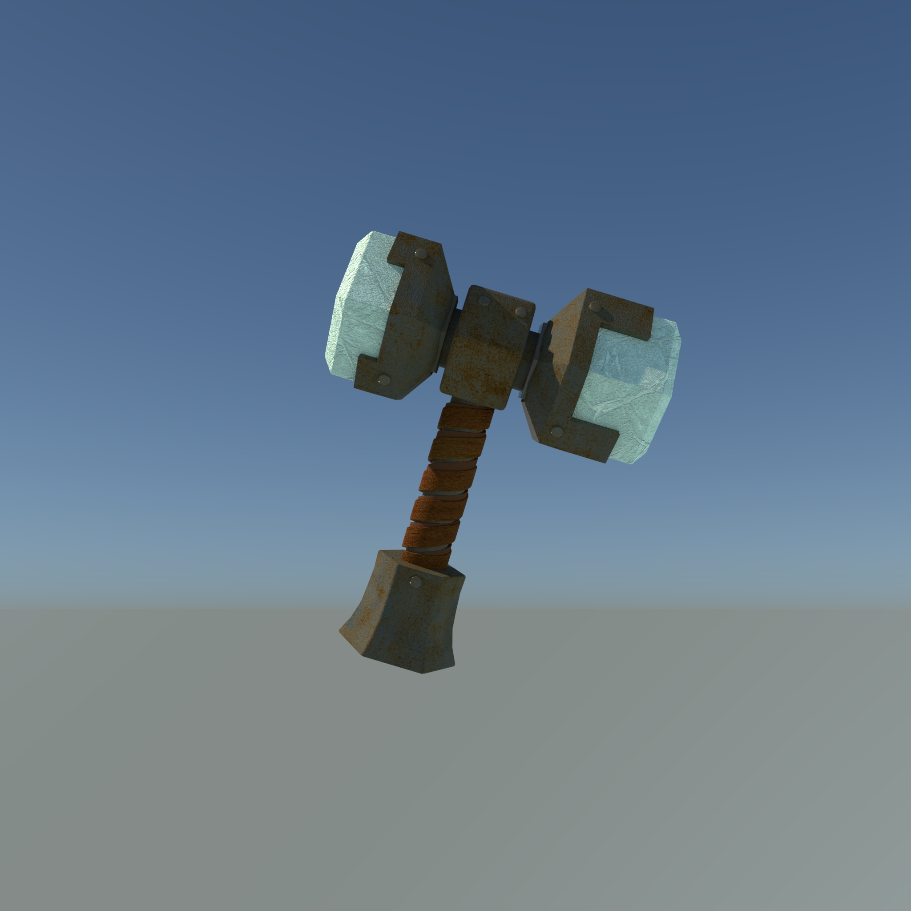

- HTML
- CSS
- JavaScript
HTML
Portfolio
오상엽 1992년생 대전 거주 대전 폴리텍 영상디자인과 졸업
3D Motion graphic Use Tools : C4D, Unreal Engine
줄바꿈test
Be not afraid of greatness.
Some are born great,
some achieve greatness,
and others have greatness thrust upon them.
-William Shakespeare
단락을 나누기 위해서 Html에서 구글 검색엔진을 사용한다 html paragraph tag
br tag와는 달리 단락을 나눌 수 있다.